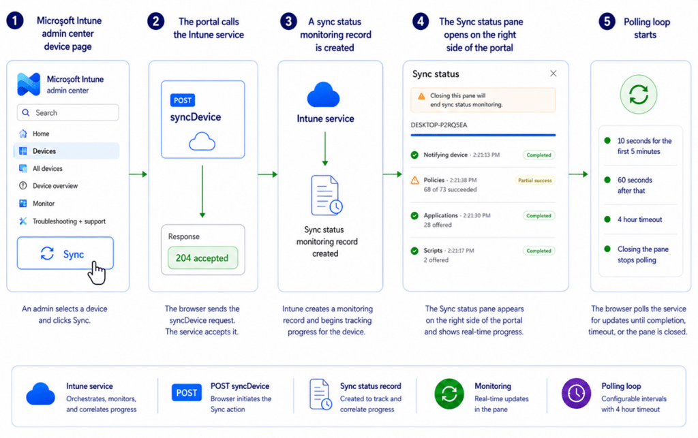
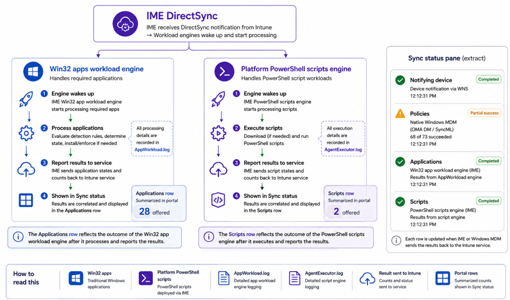
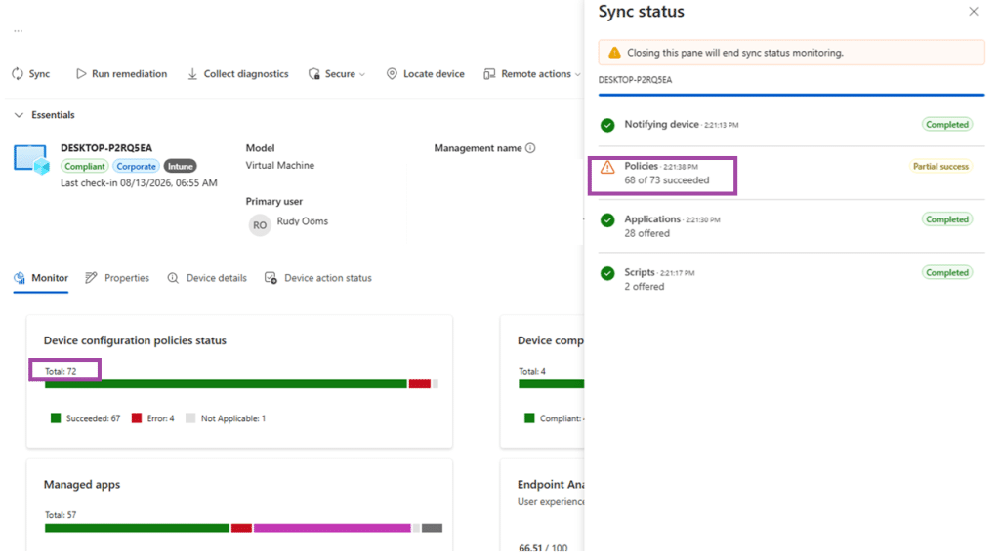

Microsoft has quietly improved the Windows device sync experience in Intune. Instead of only sending a push request that tells the device to check in through IC3 and WNS, the portal can now also open a live Sync status window that shows the progress Intune receives back from the service. That change matters because Intune is no longer relying on one single device-side engine. Windows MDM still follows its own path, while Intune Management Extension workloads use a separate path. The portal then pulls those results together into one monitoring pane.
What the New Sync Status pane looks like
The current pane opens on the right side of the device page after Sync is triggered. In this example below, it shows a completed notification step, a partial success result for Policies, and completed summary rows for Applications and Scripts.

What changed
The important change is not just a nicer sync status window. The portal now behaves more like a lightweight monitoring client. It starts the Sync action, opens the pane, and keeps polling for updated status while the action is in progress.
At the same time, the device-side paths are different depending on the workload. Classic Windows MDM still uses WNS and the WindowsMDMPush path. IME workloads use the notification path built around IC3 and Trouter DirectSync. That split is the reason one Sync action can light up different rows in the pane.
The big Sync Status Overview
This first diagram is the map for the rest of the article. It shows how one Sync action is accepted, monitored, split into workload-specific paths, correlated by the service, and finally returned to the Sync status pane.

The Sync Window pane is therefore best understood as a summarized service view. It is not a direct log viewer, and it is not a one-to-one mirror of every individual action on the device.
Breaking the main Sync Status Window flow into smaller parts
The high level flow is useful, but it becomes much easier to explain once it is broken into smaller pieces. The next diagrams zoom in on the portal sequence, the split between Windows MDM and IME, the Policies row, and the Applications and Scripts rows.
1. From Sync click to live monitoring
The first part is fully portal-side. The browser sends syncDevice, the service accepts the action, a monitoring record is created, and the Sync status pane opens. Only after that does the polling loop begin.


Portal side sequence from clicking Sync to opening the live monitoring pane.
That distinction matters during troubleshooting. A successful syncDevice response only proves that the request was accepted. It does not prove that every workload has already started or completed.
2. One Sync action splits into two notification paths
What looks like one action in the portal is delivered through two different device side paths. Windows MDM is still woken through WNS and the WindowsMDMPush task. IME uses the IC3 and Trouter path through NotificationMessageListener.

One Sync action, two different device side notification paths.
This split explains why the pane is not backed by one single Sync engine. Policies live on the Windows MDM side. Applications and Scripts live on the IME side.
3. Zoom in on the Policies row
The Policies row is best explained through the classic Windows MDM path. WNS carries the notification, WindowsMDMPush wakes the MDM client, OMADMClient opens an OMA DM session, and policy results (status) are returned to the service. The service then exposes that summary through getSyncStatus.

There is another boundary worth calling out. In this investigation, classic Windows MDM activity clearly contributes to the Policies row, but WinDC or MMP C policy paths were not proven to be part of the on demand Sync results shown here. For now, the safest conclusion is that the pane surfaces the results Intune chose to aggregate, not every policy path that exists on the device.
4. Zoom in on Applications and Scripts
Inside the IME, Applications and Scripts are handled by separate workload engines. When the DirectSync notification reaches IME, the Win32 app workload wakes up and starts processing the required applications that are applicable to the device. That processing is recorded in AppWorkload.log, while the resulting application state is reported back to the Intune service and eventually reflected in the Applications row. Platform PowerShell scripts follow their own execution path, with the actual script execution visible in AgentExecutor.log and the resulting state reported back separately for the Scripts row.


The new Sync Window pane is designed to give quick visibility, while the detailed logs on the device remain the place for deeper troubleshooting.
How this helps during troubleshooting
The biggest value of the new pane is visibility. Before this experience, an admin could trigger Sync and then wait without much feedback. Now you immediately get a service-side view that shows whether Intune accepted the action and whether the main result buckets have started returning data.
- If Notifying device completes, you know the action was at least accepted and tracked by the service.(AKA the device is online)
- If Policies moves but Applications or Scripts do not, that points you toward the split between the Windows MDM path and the IME path.
- If Applications or Scripts show offered counts, you can pivot into AppWorkload.log or AgentExecutor.log on the device for detail (pulled by remote diag collection).
- If Policies shows partial success, you know there is work to do, but the pane alone does not tell you which exact policy objects failed… which is a shame…


What the new Sync Status does not prove
The pane is helpful, but it should not be treated like a perfect source of truth for every detail.
- Applications and Scripts are summarized rows. They do not replace the detailed IME logs.
- Knowing which applications/script/policies failed or were succesful is not possible.
- Where the policies number comes from… that’s the biggest question.
- This current UI does not show a separate Compliance row, so this article intentionally leaves compliance out of the flow…. For now…
Closing thoughts
The new Sync status pane is a meaningful improvement because it turns Sync into something visible. You click Sync, Intune starts monitoring, the portal opens a live pane, and the service begins returning summarized status from the Windows MDM and IME paths.
That does not mean the pane explains everything. But it does give admins a much better starting point. Instead of guessing whether anything happened, you can now see the action being accepted, follow the major result buckets, and then pivot into the right logs when you need deeper detail.
For the current UI shown here, the cleanest mental model is simple: one portal action, multiple device side clients, one summarized service view.